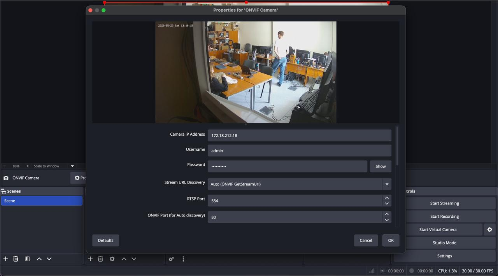
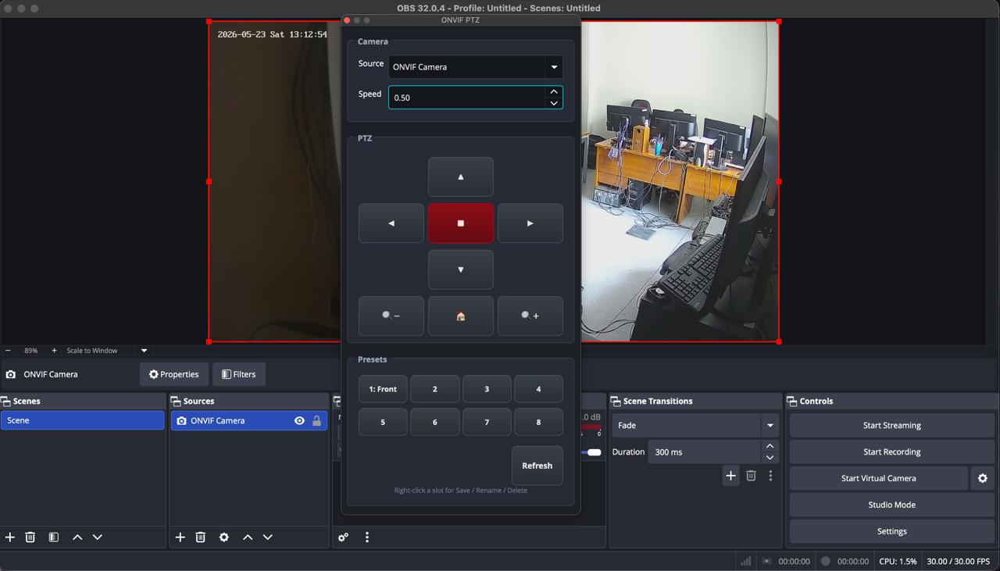
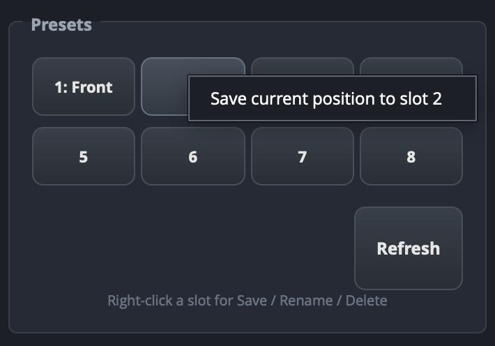
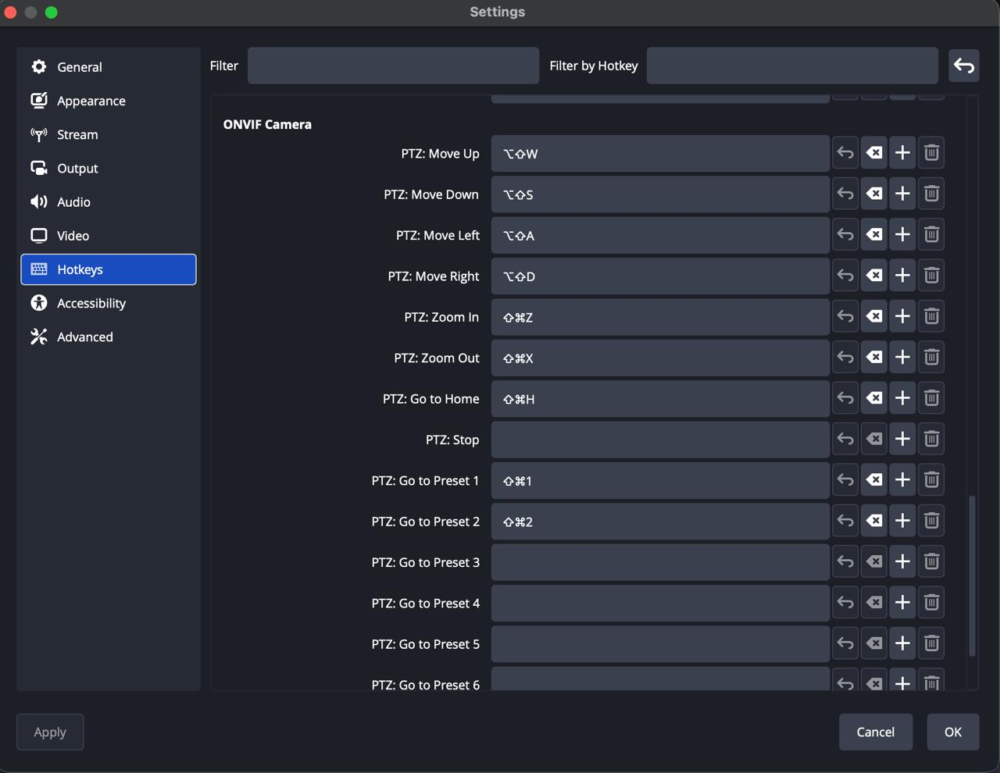

Нативный C++ Плагин для OBS Studio
Управляйте PTZ-камерами прямо из OBS
Контроль поворота, наклона и зума IP-камер по стандарту ONVIF Profile S. Автоматическая адресация пресетов, биндинг горячих клавиш и сверхнизкая задержка через GStreamer.
Совместимость и стек:
OBS Studio 29.0+
Qt6 Framework
libcurl & libopenssl
GStreamer Core
OBS Studio 30.1 - ONVIF PTZ Dock Panel
LIVE
Камера подключения:
IP: 172.18.212.18 [ONVIF Camera]
ONLINE
Интуитивный пульт
Скорость PTZ:
0.50
Активные пресеты:
1: Front view
2: Empty
3: Empty
4: Empty
Галерея мониторинга:

image_4ec801.jpg

image_4ec802.jpg

image_4ec803.jpg

image_4ec805.jpg